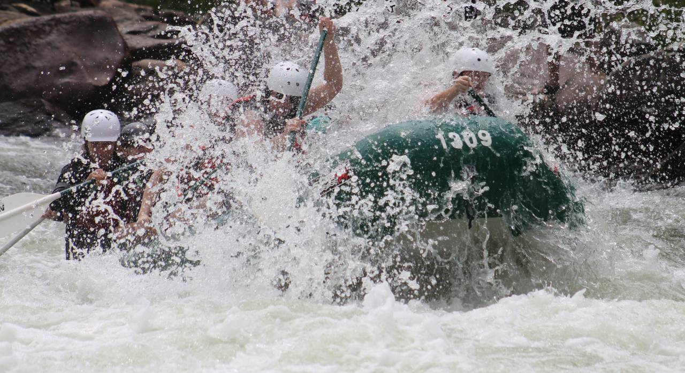

We run whitewater for the rush
White-water rafting trip down the Pacuare River from San Jose. Opportunities to see diverse wildlife in its natural habitat. The rainforests that surround the river are home to exotic animal species such as jaguars, monkeys, ocelots, and a very large number of birds. Also it was considered one of the 5 nicest rivers to practice rafting.
We run rivers to relax

The Pacuare River headwaters (where the river starts) are found high up in the Talamanca Mountain Range, south of the city of Turrialba and flows approximately 108 kilometres (67 mi) to the Caribbean.
Come run with us
Come and joun us with this amazing recreational outdoor activities..
We are experienced river professionals who are passionate about providing you with a fantastic river
experience.